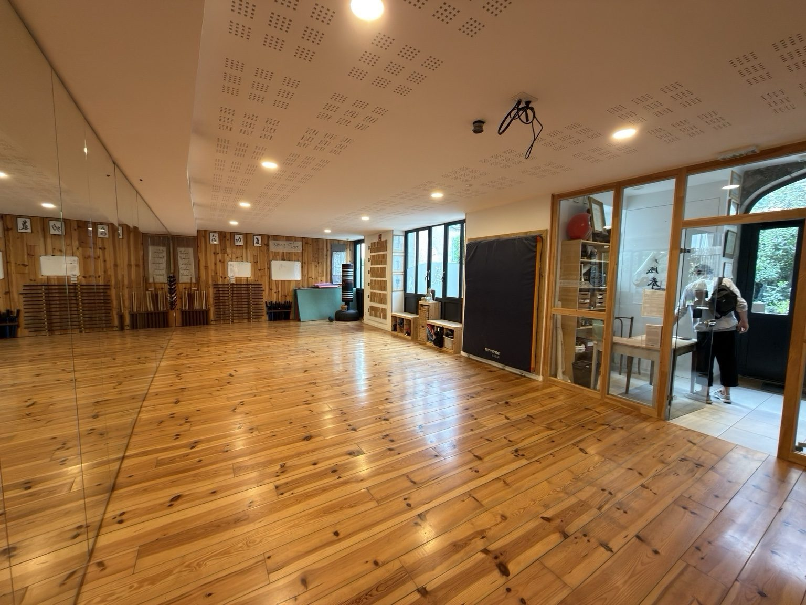

氣
Travail interne
Posture, respiration, relâchement et coordination globale.
Un art pour cultiver l’harmonie du corps et de l’esprit, dans un dojo chaleureux au cœur de Saint-Germain-au-Mont-d’Or.

ATEMI Mont d’Or transmet les arts martiaux internes chinois dans un cadre bienveillant, progressif et accessible.
Posture, respiration, relâchement et coordination globale.
Développer la sensibilité, la disponibilité et la justesse.
Comprendre les principes au travers d’applications concrètes.
Progresser sans opposition inutile, avec constance et respect.
Samedi 5 septembre — Salle Maryse Bastié.
Lundi 14 septembre 2026.
Venez découvrir et essayer pendant la période de rentrée.
Des pratiques complémentaires pour cultiver la vitalité, la structure, la présence et l’efficacité.
Arts énergétiques pour cultiver la vitalité et l’équilibre intérieur.
Souplesse, ancrage, coordination et fluidité du mouvement.
Applications martiales internes et travail de la structure.
Écouter, comprendre et agir avec justesse dans la relation.
Quelques aperçus de la pratique, de la salle et de l’entrée du club.
ATEMI Mont d’Or
6, rue du Lavoir
69650 Saint-Germain-au-Mont-d’Or
04 78 91 45 50
atemimontdor@gmail.com
Une page dédiée présente Jérôme Guillot, Jean-Claude Guillot, fondateur du club, et les autres enseignants.
Voir les enseignants